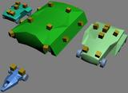
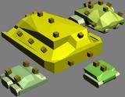
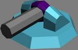
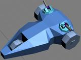
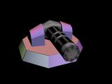

Kustorion

|
This page contains outdated information, but is kept for historical reasons. |
Metal Fatigue was a game made in 2000 and was sold for only a year. It had ComBots which were robots operated by three people. ComBots could have swappable parts(Arm-Arm-Torso-Legs) which differed in variety of ways. Some parts were for defensive purposes others for offensive and some that would be called passive(Axes/Swords/Shields/Speed Legs...). This mod will continue this idea. But the ground units will be customizable as well as mechs(Will be called in another name). But their weapons won't be as effective as those on the mechs!
Metal Fatigue also had the three planes(Air/Asteroid Plane; Surface; Underground). Not decided if these will be in the mod.
Pendrokar - In my opinion the planes made the game more intense due to needed spectating of each plane. Which I think is a bad thing.
This mod will try to make these custom units as easy as possible to create and save them!
Tech level will differ in the size of the unit chassis that higher tech factories can build. The mechs will be built at Tech 3 or 4 not yet decided.
Races: Two races. Meant to have one playable(Humans) and one unplayable for single player. The unplayable race was supposed to be a more advanced alien race whose units were much more powerful than that of the humans.
Resources same as in Total Annihilation: metal and energy.
Story: Highly influenced by the ending of Metal Fatigue although that would have been IP stealing to continue that story.
Unit chassis/engines: Driven by remote control from a command center that is not on the battlefield.
| Chassis | Wheeled | Treaded | Spiderling | Hovercraft | Underground Digger |
|---|---|---|---|---|---|
| Tech Levels | 4 | 4 | 2 | 2(Tech 2/3) | 3(Tech 2/3/4) |
| Visual Description | (Tech 1) On 3 wheels. (Tech 2) 4, a bit bigger wheels, (whole size is 30% bigger than Tech 1). (Tech 3) 6 big wheels (whole size 2 times bigger than Tech 1). (Tech 4) 8 big wheels (size 3 times bigger than Tech 1) |
(Tech 1) A pair of treads. (Tech 2) Two same pair of treads (size same % as wheeled). (Tech 3) Two pair of treads, back treads 150% larger than front. (Tech 4) Two big pair of treads same sizes. |
Robot-Spider type. (Tech 2) 6 Legged . (Tech 3) 8 legged; size about 50% larger than Tech 2 |
(Tech 1) Length:Width = 3:2 (Tech 2) Length:Width = 4:2 (Tech 3) Length:Width = 6:3 |
(Tech 2) Tech 2 cylinder type body with two pair of treads with an drill on the front. (Tech 3) Bigger by 60% and has two pair of treads(front:back = 1:2). (Tech 4) has three drills on the front pointed close to the center with two pairs of threads and 120% bigger than Tech 1. |
| Movement | Good speed and chassis, turret rotation speed; Cannot drive onto steep terrain. Has small chance of getting tires shot therefore making the unit immobile until repaired. | Moderate speed, slow rotation speed for both the vehicle and turrets and can drive on steep terrain. | Slow speed; Very fast rotation speed; All terrain; Amphibious. | Very fast speed; Moderate rotation speed; Cannot drive onto steep terrain; Can Glide down a hill; Can Hover over short walls. | Very slow speed and rotation speed on ground; Moderate speed when going through underground. Can drive onto steep terrain. |
| Weapon, Armor, Shield and Device slot count | Tech 1 - 2 Tech 2 - 5 Tech 3 - 8 Tech 4 - 12 |
Tech 1 - 2 Tech 2 - 4 Tech 3 - 9 Tech 4 - 14 |
Tech 2 - 3 Tech 3 - 7 |
Tech 1 - 1 Tech 2 - 4 Tech 3 - 8 |
Tech 2 - 6 Tech 3 - 12 Tech 4 - 18 |
| Carrying Capacity | Low | Medium | Medium | Low | Very High |
| Chassis | Gunship | Bomber | Fighter |
|---|---|---|---|
| Tech Levels | 3 | 3 | 3 |
| Visual Description | Tech 3 would be similar to a Krow from the AA mod! | Higher Tech bombers are larger! | Each changing size by 20% more than previous Tech. |
| Flight Height | Tech 1/2 - Low Tech 3 - Medium |
Tech 1 - Medium Tech 2/3 - High |
Low-Medium(Default)-High |
| Weapon, Armor, Shield and Device slot count | Tech 1 - 2 Tech 2 - 5 Tech 3 - 8 |
Tech 1 - 2 Tech 2 - 4 Tech 3 - 7 |
Tech 1 - 1 Tech 2 - 2 Tech 3 - 5 |
| Chassis | Battleship | Support Ship | Carrier Ship | Submarine |
|---|---|---|---|---|
| Tech Levels | 4 | 3 | 2(Tech 2/3) | 3(Tech 1/3/4) |
| Description | Tech 1(scout ships), Tech 2 (destroyers), Tech 3 (cruisers/battleships), Tech 4(dreadnoughts). NO DEVICES OR SHIELDS CAN BE ADDED=> standart los and radar give disadvantage to any target! Slower with every better tech! | Primary naval builders, best with radars,sonars and/or radar-jammers combined with battleships, modernate speed, not that expensive! | Tech 2 has two repair/refuel pads and a fighter/bomber/gunship bay that can hold 4 air units, Tech 3 has four repair/refuel pads and a fighter/bomber/gunship bay that can hold 11 air units! Fight command sends fighters/gunships to fight the carrier stays in place! Can manage an effective coastal offence! Expensive! | Underwater submarine. Hidden from battleships, unless detected by a sonar! Can shoot nukes from underwater(Nuke-Package required). Can submerge/unsubmerge! Can only shoot torpedoes and nukes while submerged! Very Expensive and cannot have any Anti-Air weaponry! |
| Weapon, Armor, Shield and Device slot count | (Cannot have Shields and Devices) Tech 1 - 2 Tech 2 - 6 Tech 3 - 11 Tech 4 - 17 |
Tech 1 - 1 Tech 2 - 3 Tech 3 - 6 |
Tech 2 - 6 Tech 3 - 10 |
Tech 1 - 2 Tech 3 - 4 Tech 4 - 9 |
| Carrying Capacity | Very High | Very Low | Medium | High |
Adding weapons, shields and devices to units will make them heavier and thus reduce their speed and off course make the unit longer to build! PS. By expensive and cheap I mean in the cost of metal!
| Weapon | Lasers | Minigun | Plasma | Lightning | Rockets (Unguided) |
|---|---|---|---|---|---|
| Description | Precise, heat creative weapon, don't weight much and are cheap, but drain's energy when shot. Adding more than one makes lasers stronger and their range boosted, but makes much more energy usage! Low damage against air!* | Precise, low-medium damage, fast rate of fire, cheap, light, though has small range! Good ammunition for raiding! | Imprecise weapon, pretty heavy but powerful shot with splash damage. medium ammunition! Higher range for Naval units(25%)!* | Precise weapon, light, cheaper than lasers, doesn't do as much damage as a laser but EMP's the target a bit plus deactivates enemy units radar for a second; moderate range, uses loads of energy! Lightning is a pulse weapon unlike the Laser Tech 2! | Powerful and very long range, but pretty heavy and has low ammunition capacity. Good against slow moving and immobile units. |
| Tech Levels | 3 | 3 | 3 | 3 | 3 |
| Tech Level Descriptions | Tech 1 - Red laser(pulse laser); rapid fire; short range; low damage! Tech 2 - Green laser; medium range; medium damage(160% more damage a sec.)! Tech 3 - Blue laser(pulse laser); slow rate of fire; long range; high damage! |
Tech 1 - Short range; low damage; plenty ammunition Tech 2 - A bit longer range; double barreled=>doubled damage; 30% less ammunition than Tech 1 Tech 3 - Range as long as Tech 2; Triple barreled with more powerful ammunition; 50% less ammunition than Tech 1 |
Tech 1 - Medium range; medium damage; a bit slow rate of fire; medium ammunition Tech 2 - Longer range; higher damage; slow rate of fire; a bit less ammunition Tech 3 - Long range(shorter than lasers/rockets/lightning); great damage; slow rate of fire; low ammunition |
Tech 1 - Medium range, 30% less damage than Tech 1 laser a sec., low EMP power, medium energy consumption. Tech 2 - Better range, 10% more damage than Tech 1 laser a sec. and 20% faster firing speed, medium EMP power, lightning bolt can hop to other targets that are near the primary target(At a very short range and less EMP power) heavy energy consumption! Tech 3 - Long range(longer than laser Tech 3), twice more damage than a Tech 1 laser does a sec., but 40% slower firing rate than lighting Tech 1, high EMP power, larger hop radius, very heavy energy consumption! |
Tech 1 - Medium range, medium power rockets, fires one fast rocket a second, 50-65 ammo(about), doesn’t do splash damage Tech 2 - Long range, medium-high power rockets, fires one slower rocket every 1.5 seconds, 30-45 ammo, very small splash damage Tech 3 - Very long range(but not as long as vertical fire missles), high power rockets, fires one rocket every 2 seconds, 15-28 ammo, small splash damage |
| Weapon | Missiles(Guided) | Anti-Air Missiles (Guided) | Vertical Fire Rockets (OTA Diplomat type) | Anti-Air Long Range Missiles (A-ALRM) | Railgun |
|---|---|---|---|---|---|
| Description | Not as powerful as the rockets and range is also shorter than rockets, good against fast moving targets and slow air units, medium ammunition and have a bit faster rate of fire than rockets! | Very fast rate of fire, not that expensive and has lots of ammunition against early gunships, but not a fleet of gunships cause these missiles don't do splash damage! | Longest range, low ammunition, heavy and expensive. Best against very slow and immobile targets! | Very expensive, very heavy and slow rate of fire, but has a dreadful damage against air units! Very low ammunition!* | Pretty precise, powerful shots with extra force and has medium range(bit longer than plasma weapons), but very heavy, every shot makes unit stop cause of recoil(no recoil for Naval units), expensive. Available only at Tech 2 labs and further on!* |
| Tech Levels | 3 | 1 | 3 | 2(Tech 2/3) | 3 |
| Tech Level Description | Tech 1 - Medium range; medium damage; slow rate of fire; 10-20 ammo; small splash damage range; medium weigh Tech 2 - Medium range; medium damage; a bit faster rate of fire; 18-32 ammo; small splash damage range; lighter weigh than Tech 1 Tech 3 - Long range; heavy damage and impulse; slow rate of fire; 8-15 ammo; medium splash damage range; heavy |
--- | Tech 1 - very long range; heavy; medium splash damage range; about 6-8 rockets. Tech 2 - very long range; a bit lighter than Tech 1; medium splash damage range; about 10-13 rockets; a bit more expensive. Tech 3 - longest range; very heavy; large splash damage range; contains 5-7 rockets (almost like mini-nukes); very expensive |
Tech 2 - range = radar Tech 1; heavy damage (medium to ground); medium splash damage range; 6-8 missiles Tech 3 - range = 1.5 radar Tech 1; very heavy damage (between medium-heavy to ground units); large splash damage range; 10-12 missiles |
Tech 1 - low range; medium damage; low impulse; normal rate of fire; 20-28 ammo; medium weigh Tech 2 - medium range; heavy damage; medium impulse; slow rate of fire; 18-24 ammo; heavy Tech 3 - a bit longer range than Tech 3; heavy impulse; slow rate of fire; 14-19 ammo; very heavy and very expensive |
| Weapon | Sonic | Flame Thrower | Flak cannon (Anti-air) | Blade Wings | Bombs |
|---|---|---|---|---|---|
| Description | Creates very strong sound waves that can even make light units fly(no effect against flying units, except the ones that are landed)! Cheap, no ammo required but shots drain energy. Almost doesn't do any damage, but slows heavy units and can push light units strongly enough to knock them over, throw them in the air or smash against a cliff!. Best against multiple light(in weight) units! Ignores friendly units nearby when shooting.*/^* | Short range, drains much less energy than lasers and are more powerful, more expensive than lasers though! Good against slow moving units, immobile units and units with spiderling chassis! Stronger at close range!* | Medium range, pretty expensive, fast rate of fire and splash damage. Good against gunships and as a crippler on a bombing run air fleet!* | Adds armored and sharp blades to the fighter unit's wings, allowing the unit to run through specified Air Units with or without self-termination (further noted as spearing)! Spearing comes at a cost of HP of the fighter, more correctly 7% of the speared plane multiplied by 1.# % of the amount of Standard Armor added to the speared plane! | For ground/naval units acts as a manual trigger bomb for a great explosion (the bigger the unit the larger blast radius), very heavy and a bit expensive! For bomber air units adds drop bombs, adding more adds better explosion power and ammunition (18 (6 dropped) in a pack)! |
| Tech Levels | 3 | 3 | 1 | 3 | 1 |
| Tech Level Description | Tech 1 – short range; low impulse(can only slow down other units); light; 110 grad wave angle. Tech 2 – medium range; medium impulse(very light units get pushed); medium weight; 70 grad wave angle. Tech 3 – medium range; high impulse(slows heavy units, but can push medium weight units); a bit more heavy than Tech 2; more expensive than Tech 2; 90 grad wave angle; medium amount of energy drained. |
Tech 1 – short range, medium heat, low energy drain. Tech 2 – short range, high heat, a bit increased energy drain and heavier than Tech 1. Tech 3 – medium range, high heat, medium energy drain, medium weight |
--- | --- |
| Weapon | Napalm Bombs | EMP Bomb | Torpedoes |
|---|---|---|---|
| Description | Can only be added to bomber/fighter type planes! Does small amount of damage, large area of effect, good against multiple low level ground units, ineffective against tough heavy units! | For ground units acts as a trigger bomb for a EMP explosion (good for spies)! For air units adds EMP drop bombs (12 (4 dropped) in each pack). ^* | Can only be added to naval units and bomber/fighter type planes! Ammunition for planes = 4 torpedoes (1 dropped). |
| Tech Levels | 1 | 1 | 1(3 for Naval Units) |
| Tech Level Description | --- | --- | Tech 1 – medium range, medium damage, slow rate of fire, fast torpedo speed, medium ammo (8-11), medium weigh. Tech 2 – medium range, high damage, slow rate of fire, slower torpedo speed than Tech 1, low ammo (5-7) Tech 3 – long range, high damage, faster rate of fire than Tech 1/2, fast torpedo speed (fast as Tech 1), medium ammo (9-11), heavy and expensive. |
- * - Cannot be added to air units with an exception of hovercrafts!
- ^* - Cannot be added to naval units
Armor/Shields/Protective devices:
- Black boxes – Cheap boxes that are made of a heavy material, therefore making the carrier heavier! Good protection against sonic and other powerful force weapons (Railguns)!
- Standard Armor - against miniguns, plasma, rockets, missiles, railguns but offers much less protection to lasers and flame throwers. Heavy and bit expensive! Adding more make use of tougher material!
- Anti-Heat Armor (heat withstanding) - against lasers and flame throwers. Light, but then again expensive!
- ECM - against guided missiles and torpedoes giving a chance to redirect missile/torped fire (lesser chance on torpedoes). Light, expensive and cannot be added to planes!
- Self-protecting deflector shield - acts as a deflector to plasma and minigun weapons, heavy, not that expensive but costs energy while in use!
- Deflector shield (Bubble) - acts as a deflector to plasma and minigun weapons by creating a bubble, very heavy, expensive and very demanding on energy both while on and when deflecting!
- Standard Shield (Supcom style)(Bubble) - against all weapons except lasers, lightning guns and flame throwers, which cause more damage through this shield than without it! Very heavy, most expensive shield, but does drain energy when ON and needs recharge when maximum capable protection is done!
- Angled Standard Shield (Supcom style)(120* wide) – just like the standart shield, but acts like a turret which targets higher priority vehicles with powerful guns! Weights less, less expensive compensates the Bubble shield to work on 120* so it is stronger than „Standart Shieldâ€Â, though energy draining is lessened only by a bit
- Switchable Standard Shield/Cloaker Device – A shield/device that can be switched from a Standard Shield to a cloaker shield and the other way around! Weights 65% less than both devices/shields combined and has a 5 sec. interval when switching!
- EMP Protector - Makes it harder for the unit to get paralysed.
Other devices(one device can be added to a unit(few exceptions) and can be added only in device labs):
- Nano turret - for repairing, reclaiming, helping nano. More than one can be added, which makes nanolating more effective!
- Minelayer build pack - allows unit to lay mines, sea mines for naval units*
- Tech 1 build pack - allows unit to make Tech 1 buildings, building variety depends on ground/naval/air units differently*
- Tech 2 build pack - allows unit to make Tech 2 buildings,-||-*
- Tech 3 build pack - allows unit to make Tech 3 buildings,-||-*
- Tech 4 build pack - allows unit to make Tech 4 buildings(few superweapons and factories), and it is long to build this device*
- Nuke package - allows the unit to load and use nukes! Very heavy and very expensive! Takes 3 slots and can hold only 1 nuke!! Range = 50% further than an anti-nuke package!*^
- Anti-Nuke package - allows the unit to make anti-nukes! Takes two slots and can hold 4 anti-nukes!*^
- Amphibious Armor Plate - Doesn't give any protection against weapons, but allows the unit to go through water, if it can drive through steep terrain! Planes become seaplanes if this device is added!
- Recreation/Ressurection turret - for repair, reclaiming, ressurecting and restoring terrain, but cannot help to nano units or buildings! More than one can be added!
- Radar Tech 1 - small range radar (can be added in Tech 1/2/3 device labs)
- Radar Tech 2 - medium range radar (can be added in Tech 2/3 device labs)
- Radar Tech 3 - long range radar (can be added in Tech 3 device labs)
- Sonar Tech 1 - Can be added to naval and air units. small/medium range (Can be added in all tech shipyards and in Tech 2/3 airports)
- Sonar Tech 2 - Can be added to naval and air units. medium/long range (Can be added in tech 3/4 shipyards and in Tech 3 airports)
- Jammer Tech 1 - small radar jamming (drains three times more energy than a stealty device and can be added in Tech 1 device lab)
- Jammer Tech 2 - medium radar jamming 6x (Can be added in a Tech 2 device lab)
- Jammer Tech 3 - long radar jamming 9x (Can be added in Tech 3 device labs)
- Stealty Device - enemy can't see this unit on radar, drains small amount of energy, a bit heavy.
- Cloak Device - enemy can't see the unit exept on the radar, drains great amount of energy, better tech vehicles get more energy usage penalty!
- Switchable Standart Shield/Cloaker Device - |see armor/shields|
- Cloaker Device (Bubble)- cloaks units in an area, uses dreadful amount of energy! If the unit gets hit the cloaker is disabled for 3 seconds!
Planes get twice bigger energy penalty with energy draining devices, 150% on radar/sonar devices!
- * - Nano turret required
- *^ - Cannot be added to air units
Buildings (Upgrading doesn’t mean it will upgrade by itself! Upgrading = New Tech cost and buildtime – Old Tech cost and buildtime) (Note: Buildings that can create and add weapons/devices/shields need that type associated factory. This does not include defensive turrets):
Metal/Energy generating buildings:
- Metal extractors - Extracts metal from spots! Tech 1, Tech 2(built by Tech 3 cons) and another type Tech 1/2 with the capability to upgrade(create and add weapons to itself) (Armored metal extractor(Customizable!))
- Wind Turbines - Generates energy from wind power. Can be upgraded, by adding another wind turbine with morphing(max. 3)(Cheaper than building more generators, but less safety)
- Solar Power Plant - Generates energy from solar energy. Upgrading makes panels more effective(max. 3) (33% solar power gathered; 66% solar power gathered; 100% solar power gathered) Generates 50% less energy in shadowed areas(behind a cliff)(Needs coding). Though upgrading costs more it can be useful for space reservation!
- Geothermal Power Plant - Built on geothermal vents. Generates a nice load of energy and energy storage for early starts. Built by Tech 2 cons. Can be morphed into a Tech 3 Hazardous/Safe Geothermal Power Plant!
- Geoquiztum Power Plant – Almost the same as the normal, but uses all energy to make metal and needs more time and energy than an normal Geothermal Power Plant.(More effective than building metal makers for a standart Power Plant)
- Underwater Geothermal Power Plant – Geothermal smoke can sometimes come from the bottom of seas and this building makes use of the water by boiling it with the geothermal heat, thas generating more energy than a normal land Geothermal Power Plant. Built by Tech 2 naval/air constructors. Doesn’t have Tech 3 Level! (Not that usage is possible, because no map has underwater Geothermal Vents, but it’s a logical idea)
- Tidal Collector – Built on water. Make’s use of tidal waves to generate energy. Tech 2 can be made by Tech 2 constructors, which costs a bit more, but works underwater with no extras in generating. Cannot be morphed into Tech 2 though!
- Fusion Reactor - Generates energy with an advanced technology method that is capable of producing great amount of energy. Tech 1 is built by Tech 3 ground/air cons! Tech 1 can be then morphed into a Advanced Fusion Reactor.
- Underwater Fusion Reactor – more expensive than a normal Reactor, but better hidden. Built by Tech 3 Naval/Seaplane constructors!
- Customizable Fusion Reactor – a bit more expensive than a normal Fusion Reactor. Two devices can be added(Disinclining Turrets/Packs)!
- Metal Maker – Takes high amount of energy to produce metal. Has two techs.
Factories:
- Ground Unit Factory – Can nanolathe Wheel/Tread/Legged Chassis! Has four Techs each built by the corresponding build pack! !!!Setting an assembly as a rally point will allow for pre-building/adding weapons, shields, armor and devices. (For all unit factories)
- Specialized Unit Factory - Can nanolathe Spiderling/Hovercraft/Digger Chassis! A little cheaper in metal than the ground unit factory, but more expensive in energy cost!
- Airport – Can create all air unit chassis! Has three Techs!
- Shipyard – Builds Naval units! All naval factories/labs/armories can be submerged, which hides the buildings underwater and (For shipyard) can build submarines but at a slower building rate as well as for the weapon/device/shield/armor labs! Takes 6 seconds to submerge and rise from submerge unit, weapon etc. production is stopped!
- Weapons Lab (3 Techs) – Creates weapons needed for non-naval units!!
- Naval Weapons Lab (3 Techs) – Creates weapons and devices for naval/seaplane/hovercraft units! Cannot build weapons that are not meant for naval vessels!
- Armory- Creates armors/shields for non-naval units!
- Naval Armory - Creates armors/shields for naval/seaplane/hovercraft units!
- Device Lab – Creates devices for non-naval units! Much cheaper than an armory.
- Naval Device Lab – Creates devices for naval/seaplane/hovercraft units!
- Vehicle Assembly - Has 4 techs. Adds created weapons/armor/shields/devices to corresponding or lower level tech non-naval units and can rearm weapons. Assemblies have a tractor beam which can land air units more quickly(naval assemblies have this too)
- Naval Assembly - Has 4 Techs. Adds created weapons/armor/shields/devices to corresponding or lower level tech naval/hovercraft/seaplane units and can rearm weapons.
Offensive/Defensive buildings:
- Alpha Turret - Cheap turrets that after built can add weapons to them self's even if no weapons lab is built! In later games most likely used as an anti-air turret! Has three Techs:
- Tech 1 - Can have one Tech 1 weapon added! Not that tough(in HP).
- Tech 2 - Can have three Tech 1/2 weapons added! Pretty tough.
- Tech 3 - Can have five Tech 1/2/3 weapons added! Tough.
- Beta Turret - Pretty expensive turrets that after built can add weapons to them self's IF the corresponding weapons lab is built! Added weapons receive 20% boost in range(rockets and missiles not affected)!
- Tech 1 - Can have two Tech 1/2 weapons and one armor added! Pretty Tough(in HP).
- Tech 2 - Can have three Tech 1/2/3 weapons and two armors added! Tough
- Tech 3 - Can have four Tech 1/2/3 weapons and four armors added! A bit Tougher than Tech 2.
- Gamma Turret - Stronghold turrets that are very expensive, long to build with a wide range of weapons that may be added to themself's IF the corresponding weapons lab is built! Added weapons receive 30% boost in range(rockets and missiles not affected)! Has 3 Techs(2/3/4):
- Tech 2 - Can have four Tech 1/2/3 weapons and three armors added! Tough(in HP).
- Tech 3 - Can have six Tech 1/2/3 weapons and four armors added! Very Tough
- Tech 4 - Can have nine Tech 1/2/3 weapons and six armors added! Tough like an Titanium wall.
- Long Range Artillery Cannon (LRAC) - A cannon that can shoot at very long distances with almost any weapon. All weapons added receive 10x bonus in range and have their weapon doubled damage! Missiles, Rockets, Bombs, Torpedoes, and Flame Throwers cannot be added(EMP acts as a shoot able EMP bomb)! Only one Tech 3 weapon can be added! Can be built with a unit that has Tech 4 Building Pack Device!
- Support Tower – This building can add shields and devices to itself if the associated factory is built (device lab/naval device lab...)! Cannot add nuke/anti-nuke devices! Upgrading removes added devices! Has three Techs:
- Tech 1 – two devices can be added
- Tech 2 – three devices can be added; tougher; a bit more expensive!
- Tech 3 – four devices can be added; very tough hull (just like a factory); very expensive!
- Nuclear Missile Silo - Can create high density nuclear missiles and launch the nukes, that can only be stopped by anti-nukes!
- Anti-Nuclear Missile Silo - Can create cheap anti-nuke missiles that can be shot against incoming nukes in a wide range. The anti-nukes build up twice faster than a nuke! Can only shoot one Anti-Nuke at a time!
Other buildings:
- Floating Support Tower - Same as the original ground support tower, just a bit more expensive!
- Convertible Metal/Energy Storage - which you would need more is up to yourself. The storages
- Ammunition Support Facility – This facility creates ammunition for any weapons (expect nukes and anti-nukes) and creates small anti-gravity moving robots that take created ammunition from the Support Facility and rearms an unit that has less than 70% ammo! The robots can be destroyed by anti-air weaponry. Destroyed robots are recreated automatically by the facility. Has three Techs:
- Tech 1 - Cheap, weak in health, creates and supports 2 robots
- Tech 2 - Cheap, medium health, creates and supports 3 robots
- Tech 3 - Expensive, tough, creates and supports 6 robots
- Motion Sensor – At a size of an OTA sonar device. The motion sensor detects ground units including those that are underground in a cylinder type range. Detection range is 50% less than a radar, costs more than a radar tower and has two techs, which only differ in range(50% of tech 2 radar) and cost. Tech 1 can be upgraded to Tech 2.
Game production:Stopped
What was done for this game: Some vehicle models done:


Very few weapon models:


Got one weapon a little textured:

Team: nil/null/N/A
Pendrokar - Was the initial developer of Kustorion but stopped when understanding that he should create mods for game types that he actually might be good at(FPS games).
See progress at this thread - [1]